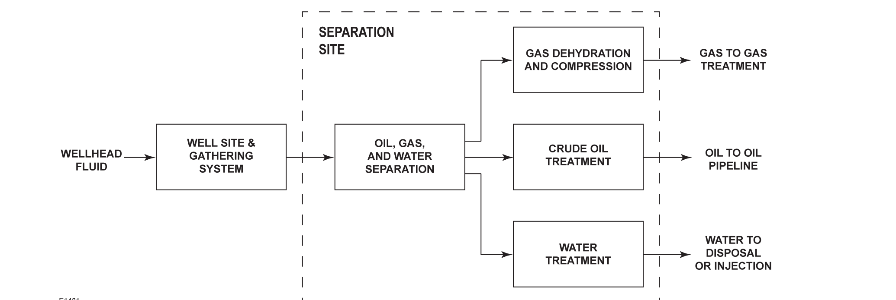

Facility Design Tradeoffs

Both onshore and offshore production share the same top-level process shape — wellhead fluid to separation to downstream gas/oil/water paths — but the real engineering difference is sited constraints, not the process itself.
Fisher Control Valve Sourcebook — Oil & Gas (© 2013 Fisher), Chapter 7 "Onshore Oil and Gas Production," Figure 7-1 (drawing number E1481, printed p. 7-1) — "Figure 7-1. Production Process Flow Diagram." — used directly. Component Index: ogas-cmp-onshore-production-process-flow.